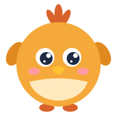

Main sambil belajar bersama Garuda!
Game ini gratis untuk melatih "berapa jawabannya". Untuk mengajarkan cara berpikirnya, terutama soal cerita, tersedia paket belajar per kelas per semester:
Contoh gratis: video Bab 1 dan cuplikan tiap bab lewat tombol 🎬 di peta bab.
Pesan paket (segera hadir)